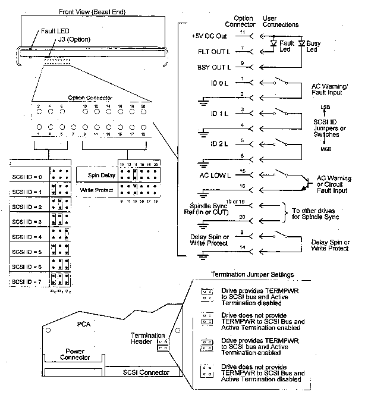

Caution
A3182A represents two intechangeable 1 GB low profile disk drives:
A3182A Hard Disk Drive (MFG Product# DSP3107L)
The drive options and SCSI ID (address) are set on J3 (see the following Figure). Table 1 shows the pins- sets for the options available with the A3182A 3.5-inch hard disk drive (MFG Product# DSP3107L). The actual settings depend upon the system in which the disk drive is installed and its location within that system.
Table 2 provides a finctional description of the J3 jumpers. A pin-set is either shorted (with a jumper installed) or open (without a jumper).
| Function | Connector | Pin-Set |
| SCSI ID 0 | J3 | 1-2 |
| SCSI ID 1 | J3 | 3-4 |
| SCSI ID 2 | J3 | 5-6 |
| FLT_OUT L | J3 | 7 |
| No Connector | J3 | 8 |
| BUSY_OUT L | J3 | 9 |
| SPINDLE_SYNC_REF L | J3 | 10 or 19 |
| +5 V DC OUT | J3 | 11 |
| Reserved | J3 | 12 |
| Delay Spin/Write Protect | J3 | 13-14 |
| AC_LOW L | J3 | 15 |
| LOGIC_GND L | J3 | 16 |
| Reserved | J3 | 17 |
| Reserved | J3 | 18 |
| LOGIC_GND L | J3 | 20 |
| Termination | PCA Header | |
| Term Power | PCA Header |
Figure 1: J3 Option Jumpers for A3182A 3.5-inch Hard Disk Drive (MFG Product#DSP3107L)
Note
Write Protect mode and the Spin Delay mode are supported but not simultaneously. The present drive mode is determined by the state of the Write Protect mode page bit. The factory defaults is Spin Delay mode.

Figure DSP3107L: Single-Ended Hard Disk Drive Option Select Connectors
| Function | Connector | Pin-Set | Configuration |
| SCSI ID 0 | J3 | 1-2 | Defines SCSI ID bit 0. Open=0, jumpered=1. |
| SCSI ID 1 | J3 | 3-4 | Defines SCSI ID bit 1. Open=0, jumpered=1. |
| SCSI ID 2 | J3 | 5-6 | Defines SCSI ID bit 2. Open=0, jumpered=1. |
| FLT_OUT L | J3 | 7 | Provides active low connection for cathode of fault LED |
| No Connector | J3 | 8 | |
| BUSY_OUT L | J3 | 9 | Provides active low connection for cathode of Busy LED |
| SPINDLE_SYNC_REF L | J3 | 10 or 19 | Provides connection for Spindle Sync REF signal |
| +5 V DC OUT | J3 | 11 | Provides +5 V DC out |
| Reserved | J3 | 12 | |
| Delay Spin/Write Protect | J3 | 13-14 | Defines if drive Write Protected (jumpered), or if delayed spin up is enabled (jumpered). Mode is set by the Write Protect Mode Page bit. Default is Delay spin. |
| AC_LOW L | J3 | 15 | Provides an input for power fail signal from external device |
| LOGIC_GND L | J3 | 16 | Logic Ground |
| Reserved | J3 | 17 | |
| Reserved | J3 | 18 | |
| LOGIC_GND L | J3 | 20 | Logic Ground |
Figure 2: Address/Option Connector Configuration (MFG Product# DSP3107L)